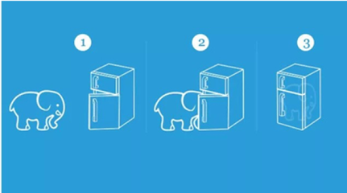

<!DOCTYPE HTML>
<html>
<head><meta name="generator" content="Hexo 3.9.0">
  <meta charset="utf-8">
  <meta http-equiv="X-UA-Compatible" content="IE=edge">
  <meta name="apple-mobile-web-app-capable" content="yes">
  <meta name="apple-mobile-web-app-status-bar-style" content="black">
  <meta name="google-site-verification" content>
  
  <title>我是如何写作的？</title>
  <meta name="author" content="Emac">
   <meta name="description" content="出门左拐：

我们为什么要写作？


我的写作心得上篇文章谈了我对写作的一些认识，这篇文章继续聊一下我现阶段的一些写作心得。最近在《得到》上听到一篇吴军老师谈写作的文章，深以为然，对照这篇文章，同时结合我的一些经验，分4个步骤介绍一下我的写作流程。
1 选题选题不分好坏，只看适不适合。那对于一个程序">
  

  <meta property="og:title" content="我是如何写作的？">
  <meta name="viewport" content="width=device-width, initial-scale=1, maximum-scale=1">
  <meta property="og:site_name" content="Emac">
 <meta property="og:image" content="undefined">
  
  <link href="/apple-touch-icon-precomposed.png" sizes="180x180" rel="apple-touch-icon-precomposed">
  <link rel="alternate" href="/atom.xml" title="Emac" type="application/atom+xml">
  <link rel="stylesheet" href="//cdn.bootcss.com/bootstrap/3.3.6/css/bootstrap.min.css">
  <link rel="stylesheet" href="//cdn.bootcss.com/font-awesome/4.5.0/css/font-awesome.min.css">
  <link rel="stylesheet" href="/css/m.min.css">
  <link rel="icon" type="image/x-icon" href="/favicon.ico">
</head>
</html>
<body>
  <div id='wx_pic' style='display:none;'></div>
  <div id="main">
    <div class="behind">
      <div class="back">
        <a href="/" class="black-color"><i class="fa fa-times" aria-hidden="true"></i></a>
      </div>
      <div class="description">
        &nbsp;拾贝
      </div>
    </div>
    <div class="container">
      

  <article class="standard post">
    <div class="title">
      
  
    <h1 class="page-title center">
        我是如何写作的？
    </h1>
  


    </div>
    <div class="meta center">
      
<time datetime="2017-01-01T16:00:00.000Z">
  <i class="fa fa-calendar"></i>&nbsp;
  2017-01-02
</time>


    
    &nbsp;
    <i class="fa fa-tag"></i>&nbsp;
    <a href="/categories/notes/">notes</a>


    
    &nbsp;
    <i class="fa fa-tag"></i>&nbsp;
    <a href="/tags/原创/">原创</a>·<a href="/tags/写作/">写作</a>


    </div>
    <hr>
    <div class="picture-container">
      
    </div>
    <blockquote>
<p>出门左拐：</p>
<ul>
<li><a href="http://emacoo.cn/notes/why-i-write/">我们为什么要写作？</a></li>
</ul>
</blockquote>
<h2 id="我的写作心得"><a href="#我的写作心得" class="headerlink" title="我的写作心得"></a>我的写作心得</h2><p><a href="http://emacoo.cn/notes/why-i-write/">上篇</a>文章谈了我对写作的一些认识，这篇文章继续聊一下我现阶段的一些写作心得。最近在《得到》上听到一篇吴军老师谈写作的<a href="http://www.jianshu.com/p/e3710e135208" target="_blank" rel="noopener">文章</a>，深以为然，对照这篇文章，同时结合我的一些经验，分4个步骤介绍一下我的写作流程。</p>
<h3 id="1-选题"><a href="#1-选题" class="headerlink" title="1 选题"></a>1 选题</h3><p>选题不分好坏，只看适不适合。那对于一个程序员，什么是适合的选题？在我看来，至少要满足两个条件：第一，感兴趣的，第二，有一些实践经验。兴趣是最好的老师，也会激发你最大的热情。有了兴趣的指引，你才能投入百分之百的热情，坚持不懈的探寻答案，并且做到精益求精。如果少了兴趣，写出来的文章往往平淡无味，并且更大的可能是半途而废。除了兴趣，有一些相关的实践经验也是不可或缺的。古人云，纸上得来终觉浅，绝知此事要躬行。王阳明也说，知行合一。读再多书，看再多文章，如果不动手实践一番，那还是别人的知识，写出来的文章也至多只能算是人云亦云。</p>
<h3 id="2-准备"><a href="#2-准备" class="headerlink" title="2 准备"></a>2 准备</h3><p>确定主题之后，下一步就是做一些准备工作，俗称做功课。就写博客而言，我一般至少提前一周开始准备。准备的内容包括：</p>
<ol>
<li><p>拟定文章标题和大纲。这是第一步也是最关键的一步。一个好的标题应该明确的告知读者文章的目的，这样既能够有效的吸引目标读者，也能够提前筛选掉不适合的读者。大纲划定了文章的广度，同时也描绘了文章的逻辑结构。比如那个著名的把大象放进冰箱的实验，大纲就是3句话，第一，打开冰箱门，第二，把大象放进冰箱，第三，关上冰箱门。<br></p>
</li>
<li><p>复读先前收藏的文章和记录的笔记，再加一些扩展阅读。还记得上篇文章我说的写作的第一个好处吗？复读也是一个温故知新的过程。同一篇文章，第一次读和第二次读往往会有不同的收获，也可能激发一些新的思考。除此之外，围绕上一步拟定的标题和大纲，针对一些不确定的点，再找一些相关材料进行学习和求证，需要的话，可以再补做一些实验。</p>
</li>
<li><p>总结现有的实践经验。从理解到实践是一次知行升级，从实践到写作又是一次知行升级。围绕写作这个目的，往往需要对先前的实践成果进行总结和加工，配以一些必要的图表，帮助读者更容易的理解你想表达的意思。</p>
</li>
</ol>
<h3 id="3-写作"><a href="#3-写作" class="headerlink" title="3 写作"></a>3 写作</h3><p>做了一定的准备之后，就可以开始写作了。但有一点切记，准备永远是不够的。新手写作，往往在准备的阶段停留太久，以至于准备到最后就不了了之。有了第一步的大纲和第二步的素材，真正的写作相对就会容易一些。写作的过程就是通过合理的组织文字和素材，达成你写当下这篇文章的目的。写作的技巧有很多，对我而言，最实用的两条是：第一，<a href="http://www.paulgraham.com/talk.html" target="_blank" rel="noopener">Write like you talk</a>，第二，写完一句再写下一句。这里就不展开解释了，留给你自己理解。</p>
<h3 id="4-传播"><a href="#4-传播" class="headerlink" title="4 传播"></a>4 传播</h3><p>如果你跟我一样，想通过写作提升自己的影响力，那么最后一步传播是必不可少的，毕竟在知识大爆炸的时代，酒香也怕巷子深。我目前用到的传播手段比较简单，除了个人站点之外，主要还是个人投稿（比如掘金，SegmentFault，CSDN等）和偶尔的第三方约稿。未来，等多一些积累，我可能会开设自己的公众号。如果你对我的文章感兴趣，也欢迎在我的<a href="https://github.com/emac/emac.github.io/issues/2" target="_blank" rel="noopener">留言板</a>留言约稿。</p>
<h2 id="参考"><a href="#参考" class="headerlink" title="参考"></a>参考</h2><ul>
<li><a href="http://www.paulgraham.com/writing44.html" target="_blank" rel="noopener">Writing, Briefly</a></li>
<li><a href="http://www.paulgraham.com/talk.html" target="_blank" rel="noopener">Write Like You Talk</a></li>
<li><a href="http://www.jianshu.com/p/e3710e135208" target="_blank" rel="noopener">成就只是你的副产品</a></li>
</ul>


  </article>
  </script>


    </div>
  </div>
  <footer class="page-footer"><div class="clearfix">
</div>
<div class="right-foot container">
    <div class="firstrow">
        <a href="#top" >
        <i class="fa fa-arrow-right"></i>
        </a>
        © emacoo.cn 2015-2022
    </div>
    <div class="secondrow">
        <a href="https://github.com/gaoryrt/hexo-theme-pln">
        
        </a>
    </div>
</div>
<div class="clearfix">
</div>
<script async src="//busuanzi.ibruce.info/busuanzi/2.3/busuanzi.pure.mini.js"></script>
<div class="busuanzi center">
    <span id="busuanzi_container_site_pv">本站总访问量<span id="busuanzi_value_site_pv"></span>次</span>
    <span id="busuanzi_container_site_uv">本站访客数<span id="busuanzi_value_site_uv"></span>人次</span>
    <span id="busuanzi_container_page_pv">
      本文总阅读量<span id="busuanzi_value_page_pv"></span>次
    </span>
</div>
</footer>
  <script src="//cdn.bootcss.com/jquery/2.2.1/jquery.min.js"></script>
<script src="/js/search.js"></script>
<script type="text/javascript">

// comments below to disable loading animation
function revealOnScroll() {
  var scrolled = $(window).scrollTop();
  $(".excerpt, .index-title, .index-meta, p").each(function() {
    var current = $(this),
      height = $(window).outerHeight(),
      offsetTop = current.offset().top;
    (scrolled + height + 50 > offsetTop) ? current.addClass("animation"):'';
  });
}
$(window).on("scroll", revealOnScroll);
$(document).ready(revealOnScroll)

// disqus scripts


// dropdown scripts
$(".dropdown").click(function(event) {
  var current = $(this);
  event.stopPropagation();
  $(current).children(".dropdown-content")[($(current).children(".dropdown-content").hasClass("open"))?'removeClass':'addClass']("open")
});
$(document).click(function(){
    $(".dropdown-content").removeClass("open");
})

// back to top scripts
$("a[href='#top']").click(function() {
  $("html, body").animate({ scrollTop: 0 }, 500);
  return false;
});


var path = "/search.xml";
searchFunc(path, 'local-search-input', 'local-search-result');

</script>

</body>
</html>
